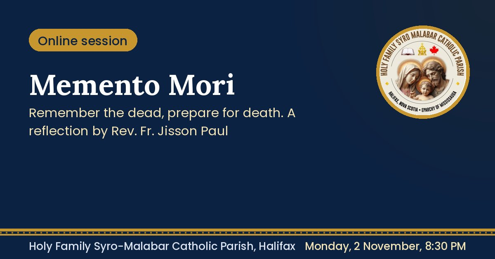

A spiritual reflection on remembrance, prayer and eternal hope by Rev. Fr. Jisson Paul Vengasserry.
A session on the importance of praying for the dead and the need to prepare for death, organized by the Department of Family Apostolate.
Sample: the join link would appear here for online sessions.

Memento MoriRemember the dead, prepare for death. A reflection by Rev. Fr. Jisson Paul Vengasserry.holyfamilyhalifax.ca